1048A10 AIR FILTER ASSEMBLY - R.R.
- Path
- Procedures > 10 ENGINE > 1048 ENGINE AIR SUPPLY CIRCUIT > 1048A VACUUM AIR CIRCUIT > 1048A10 AIR FILTER ASSEMBLY - R.R.
- Kind
- repair procedure (removal / refitting; the operation number is the code)
- Applies to
- all engines; all production periods
- Interactive page
- https://sloeber94.github.io/elrnDB-fCrm/en/#/194000303
Applies to: engines: 2.2; all production periods
 Removing
Removing
 Refitting
Refitting- Make sure that the ignition key is in the OFF position, then disconnect the battery terminal (-).
Description | Connector | |
|---|---|---|
- | Battery |
1. Remove the sound insulation cover fastened to the engine by three pins.
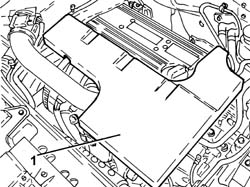
Applies to: engines: 2.2; all production periods
1. Loosen the band and disconnect the engine oil vapour recovery pipe from the cylinder head cover.
2. Loosen the bands and remove the air supply hose from the air flow meter to the throttle casing.
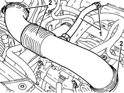
Applies to: engines: 2.2; all production periods
1. Disconnect the electrical connection from the air flow meter.
Description | Connector | |
|---|---|---|
1 | Air flow meter |
2. Undo the bolts (2a) and remove the air filter cover (2b), complete with air flow meter (2c).
3. Remove the air cleaner filter element.
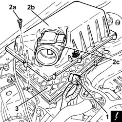
Applies to: engines: 2.2; all production periods
1. Release the fuel vapour pipe (1a) from the band (1b) on the air filter casing.
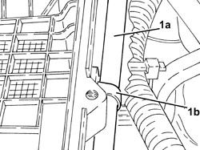
Applies to: engines: 2.2; all production periods
1. Disconnect the cold air intake from the air filter casing.
2. Remove the air filter casing fastened to the bodyshell by three pins.
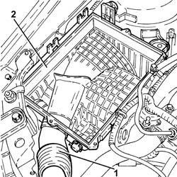
Applies to: engines: 2.2; all production periods
Refitting
Removing- Place the air filter casing in its housing and secure it to the bodyshell using the three pins.
- Connect the cold air intake to the air filter casing.
- Fasten the fuel vapour pipe to the air filter casing using the band.
- Fit the air filter filter element in place.
- Fit the cover for the air filter, complete with air flow meter, and secure it using the bolts.
- Connect the electrical connection to the air flow meter.
- Place the air supply hose from the air flow meter to the throttle casing back in its housing and secure it using the bands.
- Connect the engine oil vapour recovery pipe to the cylinder head cover and secure it using the band.
- Place the sound insulation cover back in its housing and secure it to the engine using the three pins.
- Connect the negative battery terminal.
Applies to: engines: 1.9 JTD 8v, 1.9 JTD 16v; all production periods
Removing
Refitting- Make sure that the ignition key is in the OFF position, then disconnect the battery terminal (-).
Description | Connector | |
|---|---|---|
- | Battery |
1. Disconnect the electrical connection from the air flow meter.
Description | Connector | |
|---|---|---|
1 | Air flow meter |
2. Loosen the band and disconnect the corrugated hose from the air flow meter.
3. Disconnect the cold air intake pipe from the air filter.
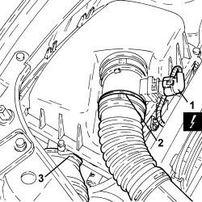
Applies to: engines: 1.9 JTD 8v, 1.9 JTD 16v; all production periods
1. Release the air filter (1a) from the fastenings on the bodyshell and remove it complete with air flow meter (1b).
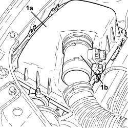
Applies to: engines: 1.9 JTD 8v, 1.9 JTD 16v; all production periods
Refitting
Removing- Refit the air filter assembly with air flow meter and secure it to the bodyshell.
- Connect the cold air intake pipe to the air filter.
- Connect the corrugated hose to the air flow meter and secure it using the band.
- Connect the electrical connection to the air flow meter.
- Connect the negative battery terminal.
Applies to: engines: 2.4 JTD 20v; all production periods
Removing
Refitting- Make sure that the ignition key is in the OFF position, then disconnect the battery terminal (-).
Op. 1016A10 SOUND-PROOFING COVER - R.R
1. Undo the bolts (1a) and move the diesel electronic injection system control unit (1b) to the side without disconnecting the electrical connections.
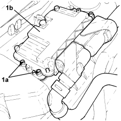
Applies to: engines: 2.4 JTD 20v; all production periods
1. Disconnect the electrical connection from the air flow meter.
Description | Connector | |
|---|---|---|
1 | Air flow meter |
2. Loosen the band and disconnect the hose from the air filter to the turbocharger, air flow meter side.
3. Remove the air filter (3a) assembly after having released it from the cold air intake (3b).
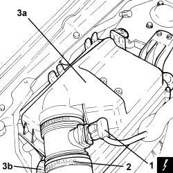
Applies to: engines: 2.4 JTD 20v; all production periods
- Working at the bench, loosen the band and separate the air flow meter from the air filter assembly.
Applies to: engines: 2.4 JTD 20v; all production periods
Refitting
Removing- Connect the air flow meter to the air filter assembly and fasten it using the band.
- Place the air filter assembly back in its housing and connect it to the cold air intake.
- Connect the hose from the air filter to the turbocharger, air flow meter side, and tighten the band.
- Connect the electrical connection to the air flow meter.
- Refit the diesel electronic injection system control unit in its housing and secure with the bolts.
Op. 1016A10 SOUND-PROOFING COVER - R.R
- Connect the negative battery terminal.
Applies to: engines: 1.8; all production periods
Removing
Refitting1. Loosen the band (1a) and remove the air filter assembly (1b) from the flow meter and from the cold air intake pipe.
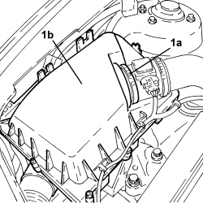
Applies to: engines: 1.8; all production periods
1. If necessary, undo the bolts (1a), lift up the air filter cover (1b) and remove the filter element (1c).
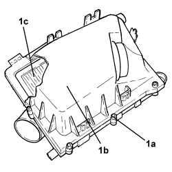
Applies to: engines: 1.8; all production periods
Refitting
Removing- Place the filter element in position.
- Place the air filter cover back in its housing and secure it using the bolts.
- Place the air filter assembly in position and secure it to the flow meter and to the cold air intake pipe using the bands.
Topics linked from this page (3)
Topics that link to this page (33)
- 1008A46 POWER UNIT RIGID SUPPORT - TIMING SIDE - R.R.
- 1008B10 POWER UNIT FRONT SUPPORT FLEXIBLE MOUNTING (TIMING SIDE) - REPLACE
- 1016C10 SINGLE CYLINDER HEAD - R.R. AND REPLACE GASKET
- 1028H20 PISTON WITH CONNECTING ROD - R.R
- 1032B10 TOOTHED TIMING BELT - R + R FOR TIMING ADJUSTMENT OR REPLACEMENT
- 1032B46 TOOTHED DRIVE PULLEY - R + R
- 1032C18 TIMING BELT MOVING TENSIONER - R.R.
- 1032C41 TIMING SYSTEM FIXED CHAIN TENSIONER PAD R R
- 1032D12 TIMING SYSTEM PROTECTIVE COVER(S) - R + R
- 1036B10 OVERHEAD CAMSHAFT IN CYLINDER HEAD - R.R ON VEHICLE
- 1036C41 PHASE TRANSFORMER ON OVERHEAD CAMSHAFT (ONE) INTAKE EXHAUST ON CYLINDER HEAD - R.R.
- 1036C42 VARIABLE VALVE TIMING SYSTEM ON INTAKE EXHAUST CAMSHAFT IN CYLINDER HEAD R R
- 1048A23 COLD AIR INTAKE FOR AIR FILTER - R.R
- 1060G90 SYSTEM CABLE LOOM - R.R.
- 1064A27 PIPE BETWEEN VACUUM RESERVOIR AND ACTUATOR CONTROL SOLENOID VALVE - R.R.
- 1072B10 INLET MANIFOLD - R + R AND REPLACE SEAL
- 1072C44 EXHAUST MANIFOLD HEAT SHIELD - R+R
- 1080B40 CATALYTIC PRE-CONVERTER - R.R
- 1080B62 CATALYTIC CONVERTER - R + R
- 1084B40 ENGINE OIL DELIVERY PIPE TO TURBOCHARGER - R + R
- 1084B42 ENGINE OIL RETURN PIPE FROM TURBO - R + R
- 1088C10 WATER PUMP - R + R
- 1088C22 WATER PUMP PULLEY - R.R.
- 1088D24 WATER PUMP RIGID COOLANT INLET PIPE - R.R.
- 3330D03 SERVO BRAKE / BRAKE PUMP ASSEMBLY - R.R. FOR RIGHT DRIVE VERSIONS
- 3340B56 RIGID PIPE FROM HYDRAULIC CONTROL UNIT TO RIGHT FRONT BRAKE - R.R.
- 5040A74 TANDEM PIPE FOR DELIVERY AND RETURN TO AIR CONDITIONING COMPRESSOR - R.R.
- 5040A78 TANDEM SUPPLY AND RETURN PIPE TO THE EVAPORATOR - R.R.
- 5040B14 AIR CONDITIONING SYSTEM MULTISTAGE PRESSURE SWITCH - R+R
- 5540B25 LOW BEAM BULB (ONE) FOR ONE HEADLAMP/LIGHT CLUSTER LH OR RH - R.R
- 5540B28 BULB (ONE) FOR FRONT DIRECTION INDICATOR IN HEADLAMP/LIGHT CLUSTER, LH OR RH - R.R
- 5540B44 DIPPED BEAM FOR ONE GAS DISCHARGE LIGHTING UNIT ONE LH OR RH R R
- 5540B61 <x>TURN SIGNAL BULB IN ONE GAS DISCHARGE LIGHT CLUSTER (ONE), LH OR RH - R&R</x>